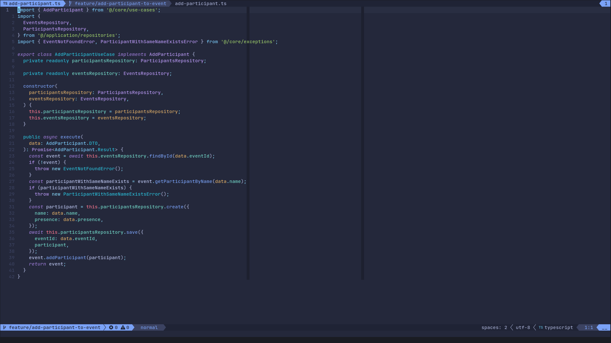
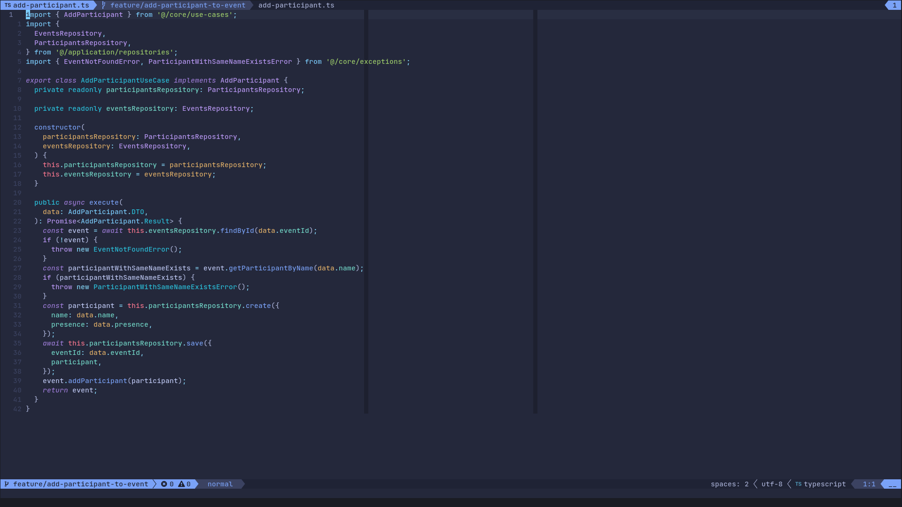

Primeiro post do blog, falando um pouco sobre mim.
29 de janeiro de 2023, Andrey Arthur

Então, qual foi o motivo?
É porque na verdade eu sou o vim.
Brincadeira, quando falamos no vs-códigos.
#life #hobbys #first-post

É porque na verdade eu sou o vim.
Brincadeira, quando falamos no vs-códigos.
#life #hobbys #first-post